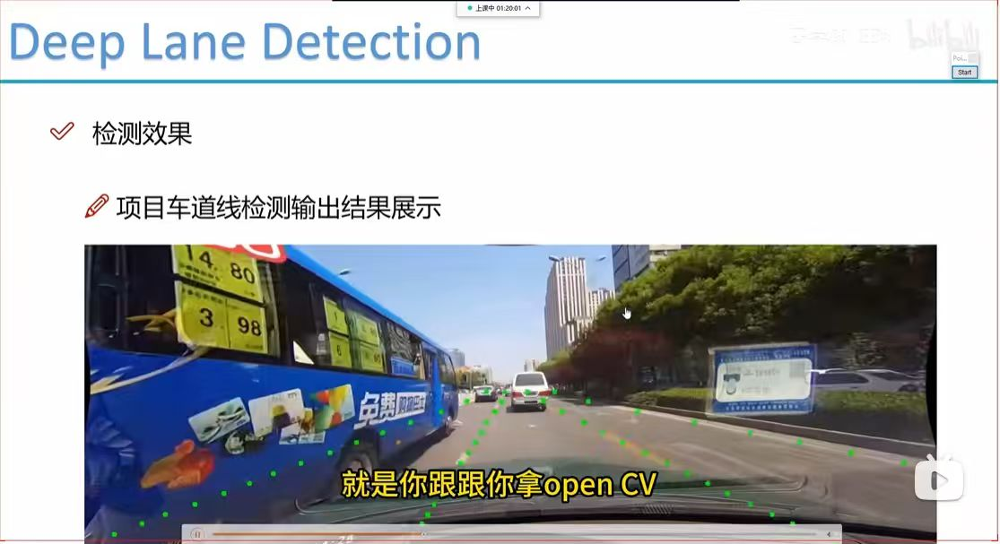
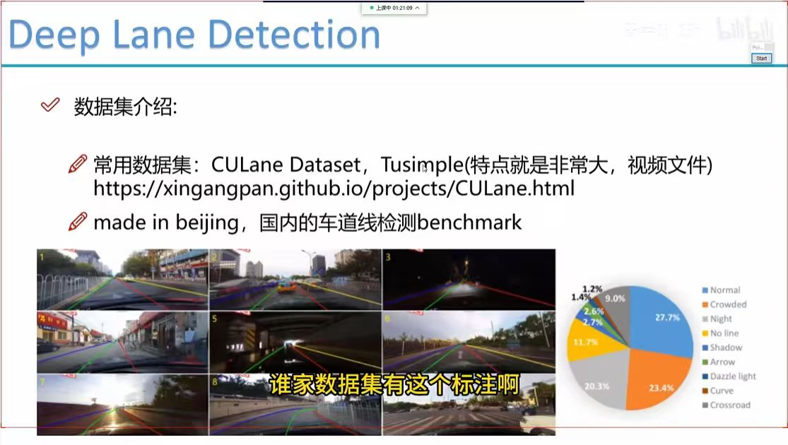
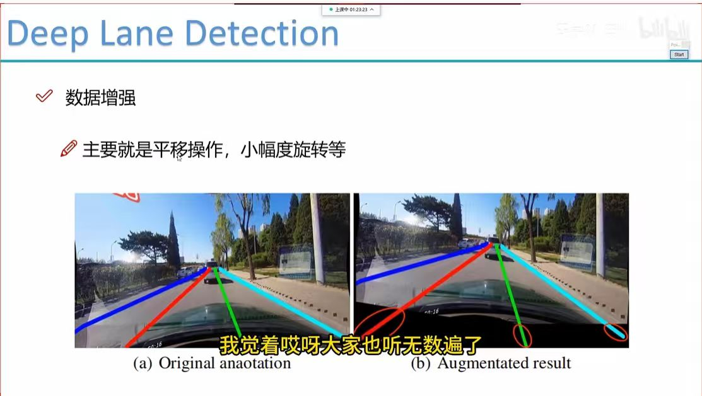
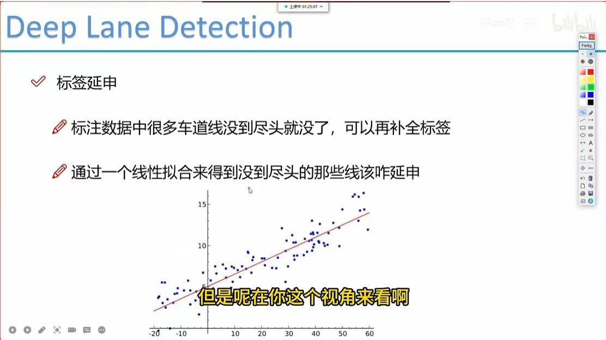
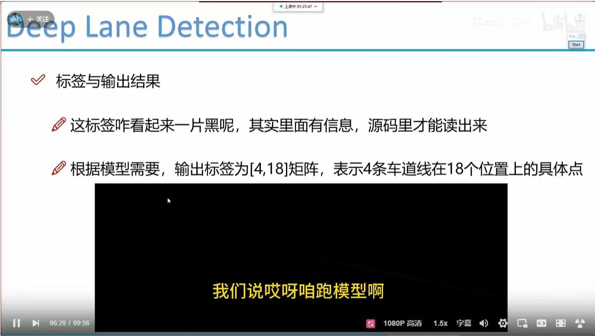
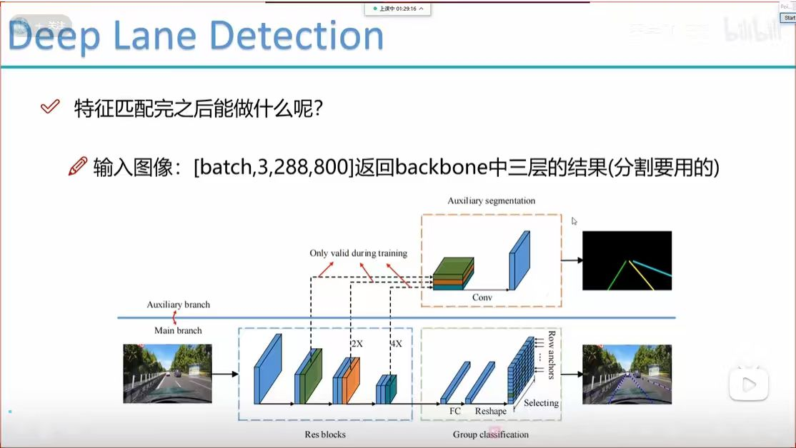
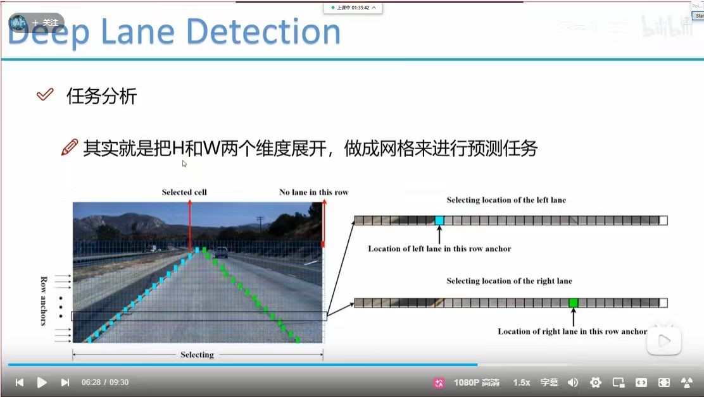
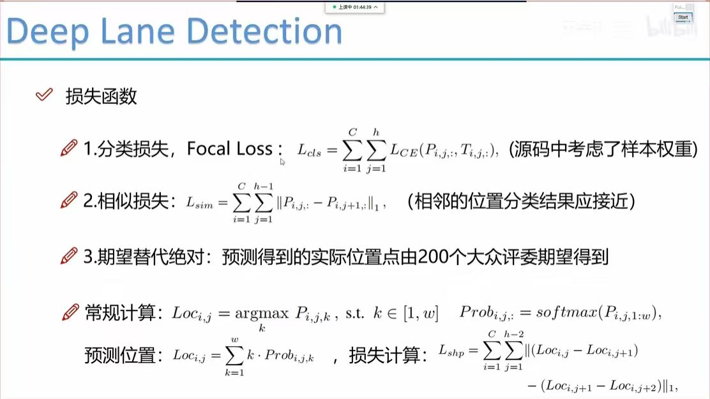

What do you see in this image?
This image showcases the output results of our deep lane detection project, illustrating real-time lane tracking on road scenes.

What do you see in this image?
This slide introduces common lane detection datasets like CULane and Tusimple, highlighting their characteristics and providing a benchmark overview for domestic lane detection research.

What do you see in this image?
This slide illustrates data augmentation techniques, primarily focusing on geometric transformations such as translation and minor rotations to improve model robustness.

What do you see in this image?
This slide discusses techniques for extending incomplete lane annotations. It proposes using linear regression to extrapolate and complete lane segments that do not extend to the full length in the original dataset.

What do you see in this image?
This slide explains the output label format for the lane detection model. It specifies that the output is a [4,18] matrix, representing specific coordinates for 4 lane lines across 18 distinct vertical positions, noting that the binary mask images often contain hidden information accessible only through source code.

What do you see in this image?
This slide illustrates the deep lane detection network architecture, detailing the main branch (ResBlocks + FC/Reshape/Selecting) and the auxiliary segmentation branch, which is active only during training to enhance feature learning.

What do you see in this image?
This slide illustrates the core task analysis strategy for deep lane detection, which involves flattening the height and width dimensions into a grid format to perform row-based lane prediction.

What do you see in this image?
This slide details the loss functions used for model training: 1. Focal Loss for classification, 2. Similarity Loss (L_sim) to ensure smoothness between adjacent positions, and 3. Shape Loss (L_shp) based on expectation values, which helps refine the predicted lane coordinates.